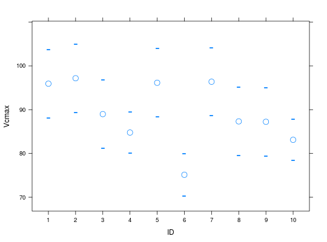
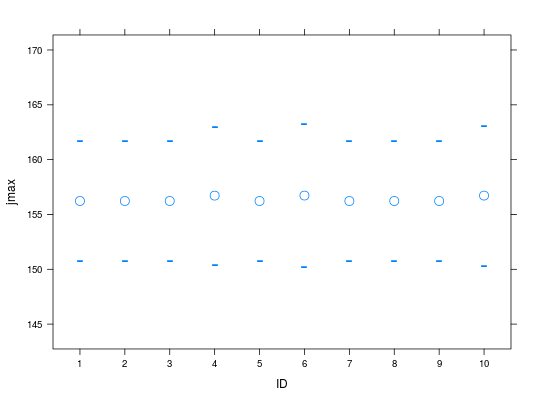

Multiple optimization of assimilation (or stomatal conductance) curves.
Usage
mOpc3photo(data, ID = NULL, iVcmax = 100, iJmax = 180, iRd = 1.1, op.level = 1, curve.kind = c("Ci", "Q"), verbose = FALSE, ...)
Arguments
- data
- should be a
data.frameormatrixwith x columns col 1: should be an ID for the different runs col 2: measured assimilation (CO2 uptake) col 3: Incomming PAR (photosynthetic active radiation) col 4: Leaf temperature col 5: Relative humidity col 6: Intercellular CO2 (for A/Ci curves) col 7: Reference CO2 level - ID
- optional argument to include ids. should be of length equal to the number of runs.
- iVcmax
- Single value or vector of length equal to
number of runs to supply starting values for the
optimization of
vcmax. - iJmax
- Single value or vector of length equal to
number of runs to supply starting values for the
optimization of
jmax. - iRd
- Single value or vector of length equal to
number of runs to supply starting values for the
optimization of
Rd. - op.level
- Level 1 will optimize
VcmaxandJmaxand level 2 will optimizeVcmax,JmaxandRd. - curve.kind
- Whether an A/Ci curve is being optimized or an A/Q curve.
- verbose
- Whether to print information about progress.
- ...
- Additional arguments to be passed to
Opc3photo
Value
-
an object of class 'mOpc3photo'
- comp1
- Description of 'comp1'
if op.level equals 1 best Vcmax, Jmax and convergence
if op.level equals 2 best Vcmax, Jmax, Rd and convergence
Description
It is a wrapper for Opc3photo which allows for optimization of multiple runs of curves (A/Q or A/Ci).
Details
Include more details about the data.
Examples
data(simAssim) simAssim <- cbind(simAssim[,1:6],Catm=simAssim[,10]) simAssim <- simAssim[simAssim[,1] < 11,] plotAC(simAssim, trt.col=1)
op.all <- mOpc3photo(simAssim, op.level=1, verbose=TRUE)Run: 1 ... Converged YES Run: 2 ... Converged YES Run: 3 ... Converged YES Run: 4 ... Converged YES Run: 5 ... Converged YES Run: 6 ... Converged YES Run: 7 ... Converged YES Run: 8 ... Converged YES Run: 9 ... Converged YES Run: 10 ... Converged YESplot(op.all)
plot(op.all, parm='jmax')